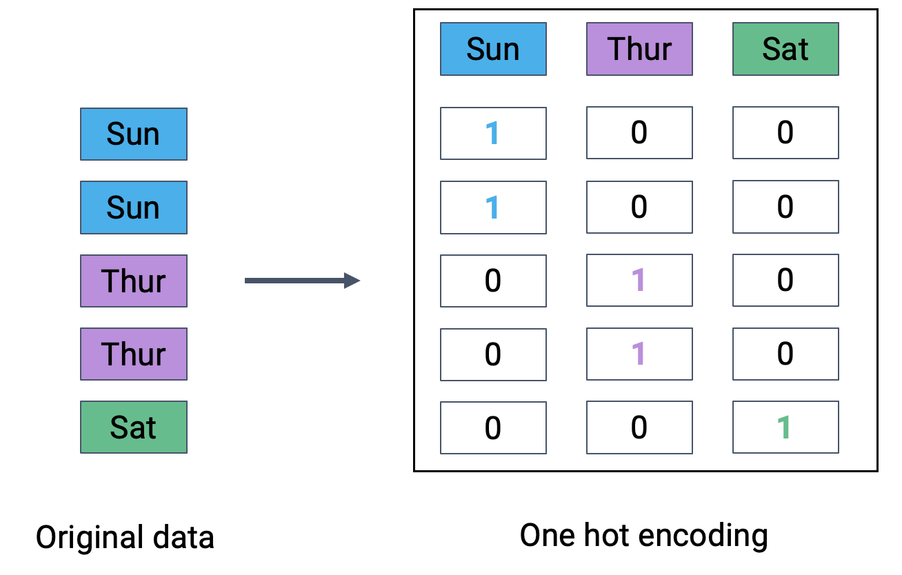

Apply the sklearn library for model creation and training
Recognize the value of feature engineering as a tool to improve model performance
Implement polynominal feature generation and one hot encoding
Understand the interactions between model complexity, model variance, and training error
At this point, we’ve grown quite familiar with the modeling process. We’ve introduced the concept of loss, used it to fit several types of models, and, most recently, extended our analysis to multiple regression. Along the way, we’ve forged our way through the mathematics of deriving the optimal model parameters in all of its gory detail. It’s time to make our lives a little easier – let’s implement the modeling process in code!
In this lecture, we’ll explore two techniques for model fitting:
Translating our derived formulas for regression to Python
Using the sklearn Python package
With our new programming frameworks in hand, we will also add sophistication to our models by introducing more complex features to enhance model performance.
13.1 Implementing Derived Formulas in Code
Throughout this lecture, we’ll refer to the penguins dataset.
import pandas as pdimport seaborn as snsimport numpy as nppenguins = sns.load_dataset("penguins")penguins = penguins[penguins["species"] =="Adelie"].dropna()penguins.head()
species
island
bill_length_mm
bill_depth_mm
flipper_length_mm
body_mass_g
sex
0
Adelie
Torgersen
39.1
18.7
181.0
3750.0
Male
1
Adelie
Torgersen
39.5
17.4
186.0
3800.0
Female
2
Adelie
Torgersen
40.3
18.0
195.0
3250.0
Female
4
Adelie
Torgersen
36.7
19.3
193.0
3450.0
Female
5
Adelie
Torgersen
39.3
20.6
190.0
3650.0
Male
Our goal will be to predict the value of the "bill_depth_mm" for a particular penguin given its "flipper_length_mm" and "body_mass_g". We’ll also add a bias column of all ones to represent the intercept term of our models.
# Add a bias column of all ones to `penguins`penguins["bias"] = np.ones(len(penguins), dtype=int) # Define the design matrix, X...X = penguins[["bias", "flipper_length_mm", "body_mass_g"]].to_numpy()# ...as well as the target variable, yY = penguins[["bill_depth_mm"]].to_numpy()# Converting X and Y to NumPy arrays avoids misinterpretation of column labels
In the lecture on ordinary least squares, we expressed multiple linear regression using matrix notation.
\[\hat{\mathbb{Y}} = \mathbb{X}\theta\]
We used a geometric approach to derive the following expression for the optimal model parameters:
To make predictions using our optimized parameter values, we matrix-multiply the design matrix with the parameter vector:
\[\hat{\mathbb{Y}} = \mathbb{X}\theta\]
y_hat = X @ theta_hatpd.DataFrame(y_hat).head()
0
0
18.322561
1
18.445578
2
17.721412
3
17.997254
4
18.263268
13.2sklearn
We’ve already saved a lot of time (and avoided tedious calculations) by translating our derived formulas into code. However, we still had to go through the process of writing out the linear algebra ourselves.
To make life even easier, we can turn to the sklearnPython library. sklearn is a robust library of machine learning tools used extensively in research and industry. It gives us a wide variety of in-built modeling frameworks and methods, so we’ll keep returning to sklearn techniques as we progress through Data 100.
Regardless of the specific type of model being implemented, sklearn follows a standard set of steps for creating a model.
Create a model object. This generates a new instance of the model class. You can think of it as making a new copy of a standard “template” for a model. In pseudocode, this looks like:
my_model = ModelClass()
Fit the model to the X design matrix and Y target vector. This calculates the optimal model parameters “behind the scenes” without us explicitly working through the calculations ourselves. The fitted parameters are then stored within the model for use in future predictions:
Use the fitted model to make predictions on the X input data using .predict.
my_model.predict(X)
Let’s put this into action with our multiple regression task.
1. Initialize an instance of the model class
sklearn stores “templates” of useful models for machine learning. We begin the modeling process by making a “copy” of one of these templates for our own use. Model initialization looks like ModelClass(), where ModelClass is the type of model we wish to create.
For now, let’s create a linear regression model using LinearRegression().
my_model is now an instance of the LinearRegression class. You can think of it as the “idea” of a linear regression model. We haven’t trained it yet, so it doesn’t know any model parameters and cannot be used to make predictions. In fact, we haven’t even told it what data to use for modeling! It simply waits for further instructions.
import sklearn.linear_model as lmmy_model = lm.LinearRegression()
2. Train the model using .fit
Before the model can make predictions, we will need to fit it to our training data. When we fit the model, sklearn will run gradient descent behind the scenes to determine the optimal model parameters. It will then save these model parameters to our model instance for future use.
All sklearn model classes include a .fit method, which is used to fit the model. It takes in two inputs: the design matrix, X, and the target variable, y.
Let’s start by fitting a model with just one feature: the flipper length. We create a design matrix X by pulling out the "flipper_length_mm" column from the DataFrame.
# .fit expects a 2D data design matrix, so we use double brackets to extract a DataFrameX = penguins[["flipper_length_mm"]]y = penguins["bill_depth_mm"]my_model.fit(X, y)
LinearRegression()
Notice that we use double brackets to extract this column. Why double brackets instead of just single brackets? The .fit method, by default, expects to receive 2-dimensional data – some kind of data that includes both rows and columns. Writing penguins["flipper_length_mm"] would return a 1D Series, causing sklearn to error. We avoid this by writing penguins[["flipper_length_mm"]] to produce a 2D DataFrame.
And in just three lines of code, our model has run gradient descent to determine the optimal model parameters! Our single-feature model takes the form:
Note that LinearRegression will automatically include an intercept term.
The fitted model parameters are stored as attributes of the model instance. my_model.intercept_ will return the value of \(\hat{\theta}_0\) as a scalar. my_model.coef_ will return all values \(\hat{\theta}_1, \hat{\theta}_1, ...\) in an array. Because our model only contains one feature, we see just the value of \(\hat{\theta}_1\) in the cell below.
# The intercept term, theta_0my_model.intercept_
7.297305899612306
# All parameters theta_1, ..., theta_pmy_model.coef_
array([0.05812622])
3. Use the fitted model to make predictions
Now that the model has been trained, we can use it to make predictions! To do so, we use the .predict method. .predict takes in one argument, the design matrix that should be used to generate predictions. To understand how the model performs on the training set, we would pass in the training data. Alternatively, to make predictions on unseen data, we would pass in a new dataset that wasn’t used to train the model.
Below, we call .predict to generate model predictions on the original training data. As before, we use double brackets to ensure that we extract 2-dimensional data.
y_hat_one_feature = my_model.predict(penguins[["flipper_length_mm"]])print(f"The RMSE of the model is {np.sqrt(np.mean((y-y_hat_one_feature)**2))}")
We repeat this three-step process by intializing a new model object, then calling .fit and .predict as before.
# Step 1: initialize LinearRegression modeltwo_feature_model = lm.LinearRegression()# Step 2: fit the modelX_two_features = penguins[["flipper_length_mm", "body_mass_g"]]y = penguins["bill_depth_mm"]two_feature_model.fit(X_two_features, y)# Step 3: make predictionsy_hat_two_features = two_feature_model.predict(X_two_features)print(f"The RMSE of the model is {np.sqrt(np.mean((y-y_hat_two_features)**2))}")
The RMSE of the model is 0.9881331104079043
We can also see that we obtain the same predictions using sklearn as we did when applying the ordinary least squares formula before!
Code
pd.DataFrame({"Y_hat from OLS":np.squeeze(y_hat), "Y_hat from sklearn":y_hat_two_features}).head()
Y_hat from OLS
Y_hat from sklearn
0
18.322561
18.322561
1
18.445578
18.445578
2
17.721412
17.721412
3
17.997254
17.997254
4
18.263268
18.263268
13.3 Feature Engineering
At this point in the course, we’ve equipped ourselves with some powerful techniques to build and optimize models. We’ve explored how to develop models of multiple variables, as well as how to fit these models to maximize their performance.
All of this was done with one major caveat: the regression models we’ve worked with so far are all linear in the input variables. We’ve assumed that our predictions should be some combination of linear variables. While this works well in some cases, the real world isn’t always so straightforward. In today’s lecture, we’ll learn an important method to address this issue – and consider some new problems that can arise when we do so.
Feature engineering is the process of transforming the raw features into more informative features that can be used in modeling or EDA tasks.
Feature engineering allows you to:
Capture domain knowledge
Express non-linear relationships using linear models.
Use non-numeric features in models
13.4 Feature Functions
A feature function describes the transformations we apply to raw features in a dataset to create a design matrix of transformed features. We typically denote the feature function as \(\Phi\) (think to yourself: “phi”-ture function). When we apply the feature function to our original dataset \(\mathbb{X}\), the result, \(\Phi(\mathbb{X})\), is a transformed design matrix ready to be used in modeling.
For example, we might design a feature function that computes the square of an existing feature and adds it to the design matrix. In this case, our existing matrix \([x]\) is transformed to \([x, x^2]\). Its dimension increases from 1 to 2.
The new features introduced by the feature function can then be used in modeling. Often, we use the symbol \(\phi_i\) to represent transformed features after feature engineering.
In matrix notation, the symbol \(\Phi\) is sometimes used to denote the design matrix after feature engineering has been performed. Note that in the usage below, \(\Phi\) is now a feature-engineered matrix, rather than a function.
\[\hat{\mathbb{Y}} = \Phi \theta\]
More formally, we describe a feature function as transforming the original \(\mathbb{R}^{n \times p}\) dataset \(\mathbb{X}\) to a featurized \(\mathbb{R}^{n \times p'}\) dataset \(\mathbb{\Phi}\), where \(p'\) is typically greater than \(p\).
Feature engineering opens up a whole new set of possibilities for designing better performing models. As you will see in lab and homework, feature engineering is one of the most important parts of the entire modeling process.
A particularly powerful use of feature engineering is to allow us to perform regression on non-numeric features. One hot encoding is a feature engineering technique that generates numeric features from categorical data, allowing us to use our usual methods to fit a regression model on the data.
To illustrate how this works, we’ll refer back to the tips dataset from previous lectures. Consider the "day" column of the dataset:
Code
import numpy as npnp.random.seed(1337)tips = sns.load_dataset("tips").sample(100)tips.head(5)
total_bill
tip
sex
smoker
day
time
size
54
25.56
4.34
Male
No
Sun
Dinner
4
46
22.23
5.00
Male
No
Sun
Dinner
2
86
13.03
2.00
Male
No
Thur
Lunch
2
199
13.51
2.00
Male
Yes
Thur
Lunch
2
106
20.49
4.06
Male
Yes
Sat
Dinner
2
At first glance, it doesn’t seem possible to fit a regression model to this data – we can’t directly perform any mathematical operations on the entry “Sun”.
To resolve this, we instead create a new table with a feature for each unique value in the original "day" column. We then iterate through the "day" column. For each entry in "day" we fill the corresponding feature in the new table with 1. All other features are set to 0.

The OneHotEncoder class of sklearn (documentation) offers a quick way to perform one-hot encoding. You will explore its use in detail in lab. For now, recognize that we follow a very similar workflow to when we were working with the LinearRegression class: we initialize a OneHotEncoder object, fit it to our data, then use .transform to apply the fitted encoder.
from sklearn.preprocessing import OneHotEncoder# Initialize a OneHotEncoder objectohe = OneHotEncoder()# Fit the encoderohe.fit(tips[["day"]])# Use the encoder to transform the raw "day" featureencoded_day = ohe.transform(tips[["day"]]).toarray()encoded_day_df = pd.DataFrame(encoded_day, columns=ohe.get_feature_names_out())encoded_day_df.head()
day_Fri
day_Sat
day_Sun
day_Thur
0
0.0
0.0
1.0
0.0
1
0.0
0.0
1.0
0.0
2
0.0
0.0
0.0
1.0
3
0.0
0.0
0.0
1.0
4
0.0
1.0
0.0
0.0
Now, the “day” feature (or rather, the four new boolean features that represent day) can be used to fit a model.
13.6 Polynomial Features
We have encountered a few cases now where models with linear features have performed poorly on datasets that show clear non-linear curvature.
As an example, consider the vehicles dataset, which contains information about cars. Suppose we want to use the "hp" (horsepower) of a car to predict its "mpg" (gas mileage in miles per gallon). If we visualize the relationship between these two variables, we see a non-linear curvature. Fitting a linear model to these variables results in a high (poor) value of RMSE.
\[\hat{y} = \theta_0 + \theta_1 (\text{hp})\]
Code
pd.options.mode.chained_assignment =Nonevehicles = sns.load_dataset("mpg").dropna().rename(columns = {"horsepower": "hp"}).sort_values("hp")X = vehicles[["hp"]]y = vehicles["mpg"]hp_model = lm.LinearRegression()hp_model.fit(X, y)hp_model_predictions = hp_model.predict(X)import matplotlib.pyplot as pltsns.scatterplot(data=vehicles, x="hp", y="mpg")plt.plot(vehicles["hp"], hp_model_predictions, c="tab:red");print(f"MSE of model with (hp) feature: {np.mean((y-hp_model_predictions)**2)}")
MSE of model with (hp) feature: 23.9436629386031
To capture non-linearity in a dataset, it makes sense to incorporate non-linear features. Let’s introduce a polynomial term, \(\text{hp}^2\), into our regression model. The model now takes the form:
How can we fit a model with non-linear features? We can use the exact same techniques as before: ordinary least squares, gradient descent, or sklearn. This is because our new model is still a linear model. Although it contains non-linear features, it is linear with respect to the model parameters. All of our previous work on fitting models was done under the assumption that we were working with linear models. Because our new model is still linear, we can apply our existing methods to determine the optimal parameters.
# Add a hp^2 feature to the design matrixX = vehicles[["hp"]]X["hp^2"] = vehicles["hp"]**2# Use sklearn to fit the modelhp2_model = lm.LinearRegression()hp2_model.fit(X, y)hp2_model_predictions = hp2_model.predict(X)sns.scatterplot(data=vehicles, x="hp", y="mpg")plt.plot(vehicles["hp"], hp2_model_predictions, c="tab:red");print(f"MSE of model with (hp^2) feature: {np.mean((y-hp2_model_predictions)**2)}")
MSE of model with (hp^2) feature: 18.98476890761725
Looking a lot better! By incorporating a squared feature, we are able to capture the curvature of the dataset. Our model is now a parabola centered on our data. Notice that our new model’s error has decreased relative to the original model with linear features. .
13.7 Complexity and Overfitting
We’ve seen now that feature engineering allows us to build all sorts of features to improve the performance of the model. In particular, we saw that designing a more complex feature (squaring "hp" in the vehicles data previously) substantially improved the model’s ability to capture non-linear relationships. To take full advantage of this, we might be inclined to design increasingly complex features. Consider the following three models, each of different order (the maximum exponent power of each model):
Model with order 1: \(\hat{\text{mpg}} = \theta_0 + \theta_1 (\text{hp})\)
Model with order 2: \(\hat{\text{mpg}} = \theta_0 + \theta_1 (\text{hp}) + \theta_2 (\text{hp})^2\)
Model with order 4: \(\hat{\text{mpg}} = \theta_0 + \theta_1 (\text{hp}) + \theta_2 (\text{hp})^2 + \theta_3 (\text{hp})^3 + \theta_4 (\text{hp})^4\)
When we use our model to make predictions on the same data that was used to fit the model, we find that the MSE decreases with increasingly complex models. The training error is the model’s error when generating predictions from the same data that was used for training purposes. We can conclude that the training error goes down as the complexity of the model increases.
This seems like good news – when working on the training data, we can improve model performance by designing increasingly complex models.
However, high model complexity comes with its own set of issues. When a model has many complicated features, it becomes increasingly sensitive to the data used to fit it. Even a small variation in the data points used to train the model may result in wildly different results for the fitted model. The plots below illustrate this idea. In each case, we’ve fit a model to two very similar sets of data (in fact, they only differ by two data points!). Notice that the model with order 2 appears roughly the same across the two sets of data; in contrast, the model with order 4 changes erratically across the two datasets.
The sensitivity of the model to the data used to train it is called the model variance. A model with high variance tends to vary more dramatically when trained on different datasets. As we saw above, model variance tends to increase with model complexity.
We can see that there is a clear “trade-off” that comes from the complexity of our model. As model complexity increases, the model’s error on the training data decreases. At the same time, the model’s variance tends to increase.
Why does this matter? To answer this question, let’s take a moment to review our modeling workflow when making predictions on new data.
Sample a dataset of training data from the real world
Use this training data to fit a model
Apply this fitted model to generate predictions on unseen data
This first step – sampling training data – is important to remember in our analysis. As we saw above, a highly complex model may produce results that vary wildly across different samples of training data. If we happen to sample a set of training data that is a poor representation of the population we are trying to model, our model may perform poorly on any new set of data it has not “seen” before during training.
To see why, consider a model fit using the training data shown on the left. Because the model is so complex, it achieves zero error on the training set – it perfectly predicts each value in the training data! When we go to use this model to make predictions on a new sample of data, however, things aren’t so good. The model now has enormous error on the unseen data.
The phenomenon above is called overfitting. The model effectively just memorized the training data it encountered when it was fitted, leaving it unable to handle new situations.
The takeaway here: we need to strike a balance in the complexity of our models. A model that is too simple won’t be able to capture the key relationships between our variables of interest; a model that is too complex runs the risk of overfitting.
This begs the question: how do we control the complexity of a model? Stay tuned for our lecture on Regularization.
Source Code
---
title: Sklearn and Feature Engineering
execute:
echo: true
warning: false
format:
html:
code-fold: false
code-tools: true
toc: true
toc-title: Sklearn and Feature Engineering
page-layout: full
theme:
- cosmo
- cerulean
callout-icon: false
jupyter: python3
---
::: {.callout-note collapse="true"}
## Learning Outcomes
* Apply the `sklearn` library for model creation and training
* Recognize the value of feature engineering as a tool to improve model performance
* Implement polynominal feature generation and one hot encoding
* Understand the interactions between model complexity, model variance, and training error
:::
At this point, we've grown quite familiar with the modeling process. We've introduced the concept of loss, used it to fit several types of models, and, most recently, extended our analysis to multiple regression. Along the way, we've forged our way through the mathematics of deriving the optimal model parameters in all of its gory detail. It's time to make our lives a little easier – let's implement the modeling process in code!
In this lecture, we'll explore two techniques for model fitting:
1. Translating our derived formulas for regression to Python
2. Using the `sklearn` Python package
With our new programming frameworks in hand, we will also add sophistication to our models by introducing more complex features to enhance model performance.
## Implementing Derived Formulas in Code
Throughout this lecture, we'll refer to the `penguins` dataset.
quarto-executable-code-5450563D
```python
import pandas as pd
import seaborn as sns
import numpy as np
penguins = sns.load_dataset("penguins")
penguins = penguins[penguins["species"] == "Adelie"].dropna()
penguins.head()
```
Our goal will be to predict the value of the `"bill_depth_mm"` for a particular penguin given its `"flipper_length_mm"` and `"body_mass_g"`. We'll also add a bias column of all ones to represent the intercept term of our models.
quarto-executable-code-5450563D
```python
# Add a bias column of all ones to `penguins`
penguins["bias"] = np.ones(len(penguins), dtype=int)
# Define the design matrix, X...
X = penguins[["bias", "flipper_length_mm", "body_mass_g"]].to_numpy()
# ...as well as the target variable, y
Y = penguins[["bill_depth_mm"]].to_numpy()
# Converting X and Y to NumPy arrays avoids misinterpretation of column labels
```
In the lecture on ordinary least squares, we expressed multiple linear regression using matrix notation.
$$\hat{\mathbb{Y}} = \mathbb{X}\theta$$
We used a geometric approach to derive the following expression for the optimal model parameters:
$$\hat{\theta} = (\mathbb{X}^T \mathbb{X})^{-1}\mathbb{X}^T \mathbb{Y}$$
That's a whole lot of matrix manipulation. How do we implement it in Python?
There are three operations we need to perform here: multiplying matrices, taking transposes, and finding inverses.
* To perform matrix multiplication, use the `@` operator
* To take a transpose, call the `.T` attribute of an array or DataFrame
* To compute an inverse, use NumPy's in-built method `np.linalg.inv`
Putting this all together, we can compute the OLS estimate for the optimal model parameters, stored in the array `theta_hat`.
quarto-executable-code-5450563D
```python
#| code-fold: false
theta_hat = np.linalg.inv(X.T @ X) @ X.T @ Y
theta_hat
```
To make predictions using our optimized parameter values, we matrix-multiply the design matrix with the parameter vector:
$$\hat{\mathbb{Y}} = \mathbb{X}\theta$$
quarto-executable-code-5450563D
```python
#| code-fold: false
y_hat = X @ theta_hat
pd.DataFrame(y_hat).head()
```
## `sklearn`
We've already saved a lot of time (and avoided tedious calculations) by translating our derived formulas into code. However, we still had to go through the process of writing out the linear algebra ourselves.
To make life *even easier*, we can turn to the `sklearn` [Python library](https://scikit-learn.org/stable/). `sklearn` is a robust library of machine learning tools used extensively in research and industry. It gives us a wide variety of in-built modeling frameworks and methods, so we'll keep returning to `sklearn` techniques as we progress through Data 100.
Regardless of the specific type of model being implemented, `sklearn` follows a standard set of steps for creating a model.
1. Create a model object. This generates a new instance of the model class. You can think of it as making a new copy of a standard "template" for a model. In pseudocode, this looks like:
```
my_model = ModelClass()
```
2. Fit the model to the `X` design matrix and `Y` target vector. This calculates the optimal model parameters "behind the scenes" without us explicitly working through the calculations ourselves. The fitted parameters are then stored within the model for use in future predictions:
```
my_model.fit(X, Y)
my_model.coef_
my_model.intercept_
```
3. Use the fitted model to make predictions on the `X` input data using `.predict`.
```
my_model.predict(X)
```
Let's put this into action with our multiple regression task.
**1. Initialize an instance of the model class**
`sklearn` stores "templates" of useful models for machine learning. We begin the modeling process by making a "copy" of one of these templates for our own use. Model initialization looks like `ModelClass()`, where `ModelClass` is the type of model we wish to create.
For now, let's create a linear regression model using `LinearRegression()`.
`my_model` is now an instance of the `LinearRegression` class. You can think of it as the "idea" of a linear regression model. We haven't trained it yet, so it doesn't know any model parameters and cannot be used to make predictions. In fact, we haven't even told it what data to use for modeling! It simply waits for further instructions.
quarto-executable-code-5450563D
```python
import sklearn.linear_model as lm
my_model = lm.LinearRegression()
```
**2. Train the model using `.fit`**
Before the model can make predictions, we will need to fit it to our training data. When we fit the model, `sklearn` will run gradient descent behind the scenes to determine the optimal model parameters. It will then save these model parameters to our model instance for future use.
All `sklearn` model classes include a `.fit` method, which is used to fit the model. It takes in two inputs: the design matrix, `X`, and the target variable, `y`.
Let's start by fitting a model with just one feature: the flipper length. We create a design matrix `X` by pulling out the `"flipper_length_mm"` column from the DataFrame.
quarto-executable-code-5450563D
```python
# .fit expects a 2D data design matrix, so we use double brackets to extract a DataFrame
X = penguins[["flipper_length_mm"]]
y = penguins["bill_depth_mm"]
my_model.fit(X, y)
```
Notice that we use **double brackets** to extract this column. Why double brackets instead of just single brackets? The `.fit` method, by default, expects to receive **2-dimensional** data – some kind of data that includes both rows and columns. Writing `penguins["flipper_length_mm"]` would return a 1D `Series`, causing `sklearn` to error. We avoid this by writing `penguins[["flipper_length_mm"]]` to produce a 2D DataFrame.
And in just three lines of code, our model has run gradient descent to determine the optimal model parameters! Our single-feature model takes the form:
$$\text{bill depth} = \theta_0 + \theta_1 \text{flipper length}$$
Note that `LinearRegression` will automatically include an intercept term.
The fitted model parameters are stored as attributes of the model instance. `my_model.intercept_` will return the value of $\hat{\theta}_0$ as a scalar. `my_model.coef_` will return all values $\hat{\theta}_1,
\hat{\theta}_1, ...$ in an array. Because our model only contains one feature, we see just the value of $\hat{\theta}_1$ in the cell below.
quarto-executable-code-5450563D
```python
# The intercept term, theta_0
my_model.intercept_
```
quarto-executable-code-5450563D
```python
# All parameters theta_1, ..., theta_p
my_model.coef_
```
**3. Use the fitted model to make predictions**
Now that the model has been trained, we can use it to make predictions! To do so, we use the `.predict` method. `.predict` takes in one argument, the design matrix that should be used to generate predictions. To understand how the model performs on the training set, we would pass in the training data. Alternatively, to make predictions on unseen data, we would pass in a new dataset that wasn't used to train the model.
Below, we call `.predict` to generate model predictions on the original training data. As before, we use double brackets to ensure that we extract 2-dimensional data.
quarto-executable-code-5450563D
```python
y_hat_one_feature = my_model.predict(penguins[["flipper_length_mm"]])
print(f"The RMSE of the model is {np.sqrt(np.mean((y-y_hat_one_feature)**2))}")
```
What if we wanted a model with two features?
$$\text{bill depth} = \theta_0 + \theta_1 \text{flipper length} + \theta_2 \text{body mass}$$
We repeat this three-step process by intializing a new model object, then calling `.fit` and `.predict` as before.
quarto-executable-code-5450563D
```python
# Step 1: initialize LinearRegression model
two_feature_model = lm.LinearRegression()
# Step 2: fit the model
X_two_features = penguins[["flipper_length_mm", "body_mass_g"]]
y = penguins["bill_depth_mm"]
two_feature_model.fit(X_two_features, y)
# Step 3: make predictions
y_hat_two_features = two_feature_model.predict(X_two_features)
print(f"The RMSE of the model is {np.sqrt(np.mean((y-y_hat_two_features)**2))}")
```
We can also see that we obtain the same predictions using `sklearn` as we did when applying the ordinary least squares formula before!
quarto-executable-code-5450563D
```python
#| code-fold: true
pd.DataFrame({"Y_hat from OLS":np.squeeze(y_hat), "Y_hat from sklearn":y_hat_two_features}).head()
```
## Feature Engineering
At this point in the course, we've equipped ourselves with some powerful techniques to build and optimize models. We've explored how to develop models of multiple variables, as well as how to fit these models to maximize their performance.
All of this was done with one major caveat: the regression models we've worked with so far are all **linear in the input variables**. We've assumed that our predictions should be some combination of linear variables. While this works well in some cases, the real world isn't always so straightforward. In today's lecture, we'll learn an important method to address this issue – and consider some new problems that can arise when we do so.
Feature engineering is the process of *transforming* the raw features into *more informative features* that can be used in modeling or EDA tasks.
Feature engineering allows you to:
* Capture domain knowledge
* Express non-linear relationships using linear models.
* Use non-numeric features in models
## Feature Functions
A **feature function** describes the transformations we apply to raw features in a dataset to create a design matrix of transformed features. We typically denote the feature function as $\Phi$ (think to yourself: "phi"-ture function). When we apply the feature function to our original dataset $\mathbb{X}$, the result, $\Phi(\mathbb{X})$, is a transformed design matrix ready to be used in modeling.
For example, we might design a feature function that computes the square of an existing feature and adds it to the design matrix. In this case, our existing matrix $[x]$ is transformed to $[x, x^2]$. Its *dimension* increases from 1 to 2.
<img src="images/phi.png" alt='phi' width='500'>
The new features introduced by the feature function can then be used in modeling. Often, we use the symbol $\phi_i$ to represent transformed features after feature engineering.
$$\hat{y} = \theta_1 x + \theta_2 x^2$$
$$\hat{y}= \theta_1 \phi_1 + \theta_2 \phi_2$$
In matrix notation, the symbol $\Phi$ is sometimes used to denote the design matrix after feature engineering has been performed. Note that in the usage below, $\Phi$ is now a feature-engineered matrix, rather than a function.
$$\hat{\mathbb{Y}} = \Phi \theta$$
More formally, we describe a feature function as transforming the original $\mathbb{R}^{n \times p}$ dataset $\mathbb{X}$ to a featurized $\mathbb{R}^{n \times p'}$ dataset $\mathbb{\Phi}$, where $p'$ is typically greater than $p$.
$$\mathbb{X} \in \mathbb{R}^{n \times p} \longrightarrow \Phi \in \mathbb{R}^{n \times p'}$$
## One Hot Encoding
Feature engineering opens up a whole new set of possibilities for designing better performing models. As you will see in lab and homework, feature engineering is one of the most important parts of the entire modeling process.
A particularly powerful use of feature engineering is to allow us to perform regression on non-numeric features. **One hot encoding** is a feature engineering technique that generates numeric features from categorical data, allowing us to use our usual methods to fit a regression model on the data.
To illustrate how this works, we'll refer back to the `tips` dataset from previous lectures. Consider the `"day"` column of the dataset:
quarto-executable-code-5450563D
```python
#| code-fold: true
import numpy as np
np.random.seed(1337)
tips = sns.load_dataset("tips").sample(100)
tips.head(5)
```
At first glance, it doesn't seem possible to fit a regression model to this data – we can't directly perform any mathematical operations on the entry "Sun".
To resolve this, we instead create a new table with a feature for each unique value in the original `"day"` column. We then iterate through the `"day"` column. For each entry in `"day"` we fill the corresponding feature in the new table with 1. All other features are set to 0.
<img src="images/ohe.png" alt='ohe' width='600'>
The `OneHotEncoder` class of `sklearn` ([documentation](https://scikit-learn.org/stable/modules/generated/sklearn.preprocessing.OneHotEncoder.html#sklearn.preprocessing.OneHotEncoder.get_feature_names_out)) offers a quick way to perform one-hot encoding. You will explore its use in detail in lab. For now, recognize that we follow a very similar workflow to when we were working with the `LinearRegression` class: we initialize a `OneHotEncoder` object, fit it to our data, then use `.transform` to apply the fitted encoder.
quarto-executable-code-5450563D
```python
#| code-fold: false
from sklearn.preprocessing import OneHotEncoder
# Initialize a OneHotEncoder object
ohe = OneHotEncoder()
# Fit the encoder
ohe.fit(tips[["day"]])
# Use the encoder to transform the raw "day" feature
encoded_day = ohe.transform(tips[["day"]]).toarray()
encoded_day_df = pd.DataFrame(encoded_day, columns=ohe.get_feature_names_out())
encoded_day_df.head()
```
Now, the "day" feature (or rather, the four new boolean features that represent day) can be used to fit a model.
## Polynomial Features
We have encountered a few cases now where models with linear features have performed poorly on datasets that show clear non-linear curvature.
As an example, consider the `vehicles` dataset, which contains information about cars. Suppose we want to use the `"hp"` (horsepower) of a car to predict its `"mpg"` (gas mileage in miles per gallon). If we visualize the relationship between these two variables, we see a non-linear curvature. Fitting a linear model to these variables results in a high (poor) value of RMSE.
$$\hat{y} = \theta_0 + \theta_1 (\text{hp})$$
quarto-executable-code-5450563D
```python
#| code-fold: true
pd.options.mode.chained_assignment = None
vehicles = sns.load_dataset("mpg").dropna().rename(columns = {"horsepower": "hp"}).sort_values("hp")
X = vehicles[["hp"]]
y = vehicles["mpg"]
hp_model = lm.LinearRegression()
hp_model.fit(X, y)
hp_model_predictions = hp_model.predict(X)
import matplotlib.pyplot as plt
sns.scatterplot(data=vehicles, x="hp", y="mpg")
plt.plot(vehicles["hp"], hp_model_predictions, c="tab:red");
print(f"MSE of model with (hp) feature: {np.mean((y-hp_model_predictions)**2)}")
```
To capture non-linearity in a dataset, it makes sense to incorporate **non-linear** features. Let's introduce a **polynomial** term, $\text{hp}^2$, into our regression model. The model now takes the form:
$$\hat{y} = \theta_0 + \theta_1 (\text{hp}) + \theta_2 (\text{hp}^2)$$
$$\hat{y} = \theta_0 + \theta_1 \phi_1 + \theta_2 \phi_2$$
How can we fit a model with non-linear features? We can use the exact same techniques as before: ordinary least squares, gradient descent, or `sklearn`. This is because our new model is still a **linear model**. Although it contains non-linear *features*, it is linear with respect to the model *parameters*. All of our previous work on fitting models was done under the assumption that we were working with linear models. Because our new model is still linear, we can apply our existing methods to determine the optimal parameters.
quarto-executable-code-5450563D
```python
# Add a hp^2 feature to the design matrix
X = vehicles[["hp"]]
X["hp^2"] = vehicles["hp"]**2
# Use sklearn to fit the model
hp2_model = lm.LinearRegression()
hp2_model.fit(X, y)
hp2_model_predictions = hp2_model.predict(X)
sns.scatterplot(data=vehicles, x="hp", y="mpg")
plt.plot(vehicles["hp"], hp2_model_predictions, c="tab:red");
print(f"MSE of model with (hp^2) feature: {np.mean((y-hp2_model_predictions)**2)}")
```
Looking a lot better! By incorporating a squared feature, we are able to capture the curvature of the dataset. Our model is now a parabola centered on our data. Notice that our new model's error has decreased relative to the original model with linear features. .
## Complexity and Overfitting
We've seen now that feature engineering allows us to build all sorts of features to improve the performance of the model. In particular, we saw that designing a more complex feature (squaring `"hp"` in the `vehicles` data previously) substantially improved the model's ability to capture non-linear relationships. To take full advantage of this, we might be inclined to design increasingly complex features. Consider the following three models, each of different order (the maximum exponent power of each model):
* Model with order 1: $\hat{\text{mpg}} = \theta_0 + \theta_1 (\text{hp})$
* Model with order 2: $\hat{\text{mpg}} = \theta_0 + \theta_1 (\text{hp}) + \theta_2 (\text{hp})^2$
* Model with order 4: $\hat{\text{mpg}} = \theta_0 + \theta_1 (\text{hp}) + \theta_2 (\text{hp})^2 + \theta_3 (\text{hp})^3 + \theta_4 (\text{hp})^4$
<br/>
<img src="images/degree_comparison.png" alt='degree_comparison' width='800'>
When we use our model to make predictions on the same data that was used to fit the model, we find that the MSE decreases with increasingly complex models. The **training error** is the model's error when generating predictions from the same data that was used for training purposes. We can conclude that the training error goes down as the complexity of the model increases.
<img src="images/train_error.png" alt='train_error' width='500'>
This seems like good news – when working on the **training data**, we can improve model performance by designing increasingly complex models.
However, high model complexity comes with its own set of issues. When a model has many complicated features, it becomes increasingly sensitive to the data used to fit it. Even a small variation in the data points used to train the model may result in wildly different results for the fitted model. The plots below illustrate this idea. In each case, we've fit a model to two very similar sets of data (in fact, they only differ by two data points!). Notice that the model with order 2 appears roughly the same across the two sets of data; in contrast, the model with order 4 changes erratically across the two datasets.
<img src="images/model_variance.png" alt='model_variance' width='600'>
The sensitivity of the model to the data used to train it is called the **model variance**. A model with high variance tends to *vary* more dramatically when trained on different datasets. As we saw above, model variance tends to increase with model complexity.
<img src="images/bvt.png" alt='bvt' width='500'>
We can see that there is a clear "trade-off" that comes from the complexity of our model. As model complexity increases, the model's error on the training data decreases. At the same time, the model's variance tends to increase.
Why does this matter? To answer this question, let's take a moment to review our modeling workflow when making predictions on new data.
1. Sample a dataset of training data from the real world
2. Use this training data to fit a model
3. Apply this fitted model to generate predictions on unseen data
This first step – sampling training data – is important to remember in our analysis. As we saw above, a highly complex model may produce results that vary wildly across different samples of training data. If we happen to sample a set of training data that is a poor representation of the population we are trying to model, our model may perform poorly on any new set of data it has not "seen" before during training.
To see why, consider a model fit using the training data shown on the left. Because the model is so complex, it achieves zero error on the training set – it perfectly predicts each value in the training data! When we go to use this model to make predictions on a new sample of data, however, things aren't so good. The model now has enormous error on the unseen data.
<img src="images/overfit.png" alt='overfit' width='600'>
The phenomenon above is called **overfitting**. The model effectively just memorized the training data it encountered when it was fitted, leaving it unable to handle new situations.
The takeaway here: we need to strike a balance in the complexity of our models. A model that is too simple won't be able to capture the key relationships between our variables of interest; a model that is too complex runs the risk of overfitting.
This begs the question: how do we control the complexity of a model? Stay tuned for our lecture on Regularization.